경험의 시대를 경험하다. <경험의 시대를 경험하다>는 2020년 1월 6일부터 11일간 라스베이거스에서 열린 CES 2020에 직접 참여해 느낀 점, 그리고 경험한 것들을 소개하기 위해 작성한 페이지입니다.
기존의 리포트 방식과 달리 저희와 함께 CES에 있는 것 처럼 하루하루 경험한 모든 것을 소개드리고자 합니다.
첫째 날
AGE OF EXPERIENCE
경험의 시대
삼성: 인간 중심의 혁신
이번 CES 2020은 김현석 대표님의 기조 연설로 시작되었다. 수많은 참가자들과 미디어들이 향후 삼성의 비전이 무엇인지 확인하고자
베니션 호텔에서 긴 대기 시간을 가졌고 오후 6시 30분이 되어서야 마침내 기조 연설의 시작을 알리는 영상이 재생되었다.
김현석 대표님은 이 자리에서 삼성 전통의 하드웨어와 인공지능, 소프트웨어의 결합을 통해 인간에게 최적화된 경험과 환경을 제공하고
이제는 그 무엇보다 사용자 경험이 중요하게 여겨지는 "경험의 시대"가 도래했다는 것을 선포했다.
7일 오전 10시부터 진행된 본 전시에서도 대표님의 연설을 베이스로 다양한 제품을 전시했는데 그 중에서 최고의 관심을 받은 것은 인공지능 로봇 '볼리'였다.
공처럼 둥근 모양을 한 볼리는 이동이 자유롭고 사용자를 인식해 따라다니고 집안 환경을 실시간으로 모니터링 한다.
이렇게 모니터링 된 정보는 SmartThings와 연동되어 스마트폰, TV, 가전 등을 적시적소에 맞게
컨트롤하며 사용자에게 알림을 주는 등 홈 케어의 역할을 수행할 수 있다고 발표 했다.
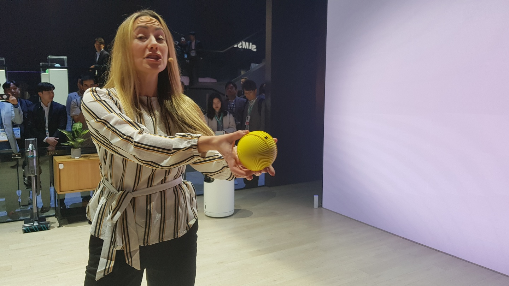
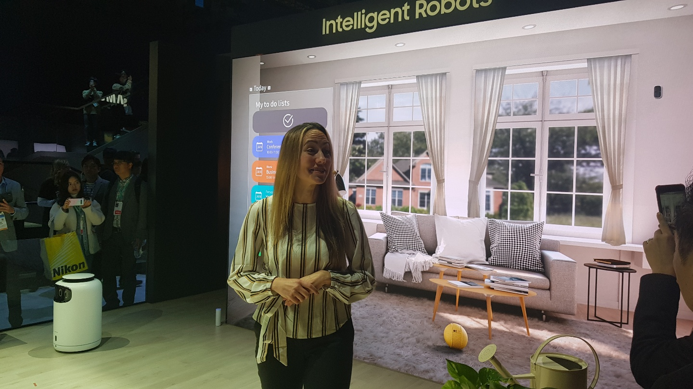
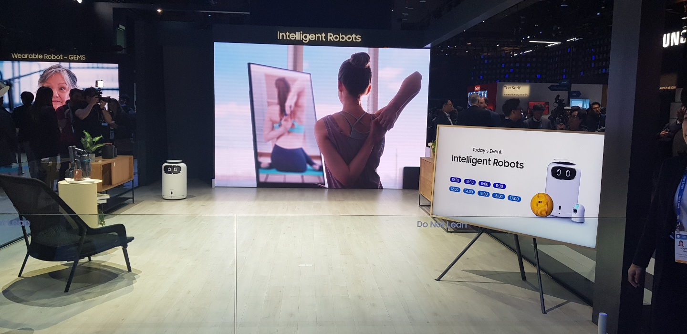
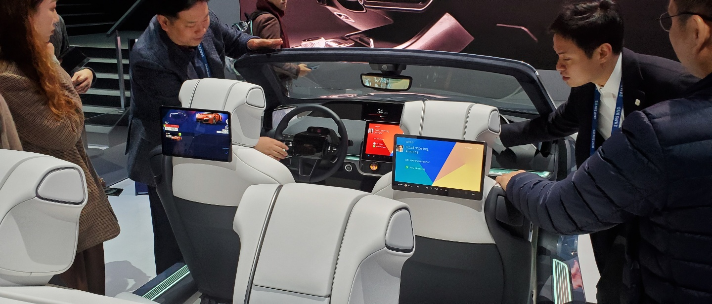
이 외에도 디지털 콕핏을 통해 하만과 진행 중인 전장 사업에 대해 소개했으며, 갤럭시 북과 폴드를 전시하고 있었다.
특히 폴드의 경우는 명품관에 온 듯한 컨셉으로 준비해 폴드가 가진 한정/고급/특별함을 잘 표현했다고 생각했다.
이번 CES에서 우리 회사가 보여준 전시는 단순히 혁신적인 제품을 발표하는 자리에서 한 단계 진화해 사용자와 직접적으로 연결되어
생활 패턴 뿐 아니라,집안 환경의 패턴을 이해하게 되었을 때 줄 수 있는 경험이 무엇인지 보여주는 자리였다.
LG: 이색 가전으로 정면 승부
LG존을 방문했을 때 가장 놀랐던 부분은 수많은 사람들이 전시 관람 및 체험을 위해 줄을 선 모습이였는데,
그도 그럴 것이 이번 CES에서 LG는 기존에 볼 수 없었던 이색 가전들을 선봉으로 세워 사용자들의 이목을
집중 시키고 있었다.
그 중에서도 가장 인기가 높았던 것은 '인도어 가든'과 주문, 서빙 등을 서포트 하는
로봇 클로이와 뛰어난 화질을 자랑하는 마이크로 LED였다.
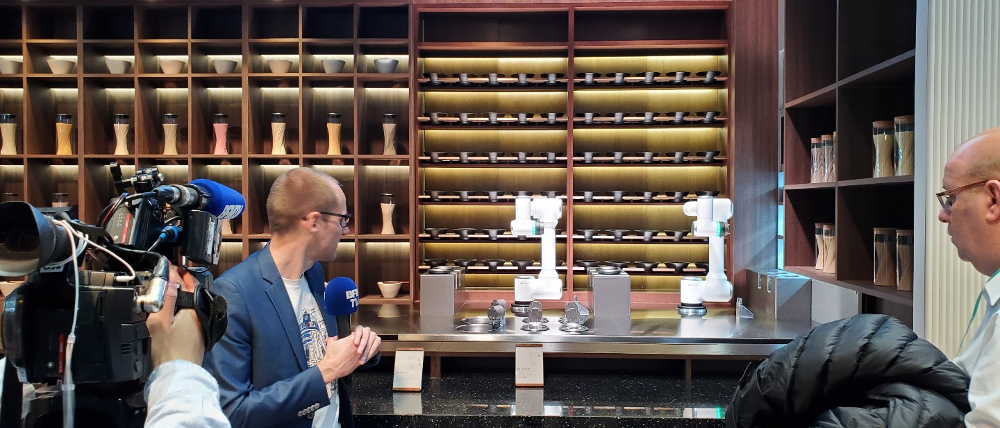
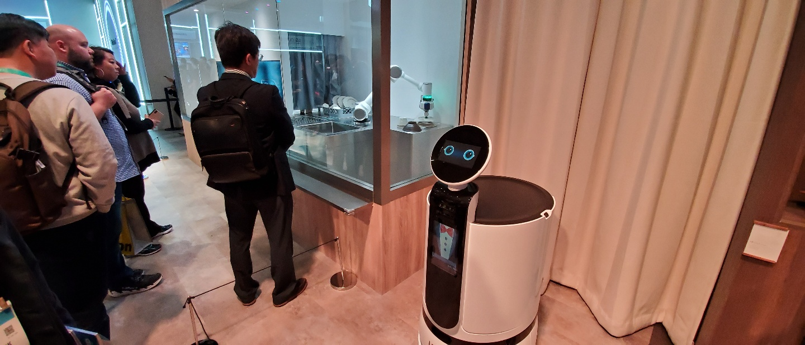
클로이의 경우 볼리와 달리 주방에 최적화 된 형태로 개발된 제품으로 보였는데 레스토랑을
기준으로 본다면 주문, 요리, 서빙, 식기 세척까지 시스템화 되었을 때 어떤 형태가 될 지
확인 할 수 있었으며
인도어 가든의 경우는 공기질, 온도, 습도, 물을 주는 시기 등을
사용자가 신경 쓸 필요없이 자동적으로 관리 되어 식물을 잘 키우지 못하는 사람들이더라도
쉽게 식물 키우고 또 관리 할 수 있는 제품으로 인기가 높았다.
Google: 새롭지 않지만 놀라운 구글 어시스턴트
구글은 다른 업체들과 달리 별도의 건물을 사용해 구글 어시스턴트만를 메인으로 전시를 하고 있었는데, 건물부터 구성까지 구글이 보이스 어시스턴트를 통해 SmartHome 생태계를 충븐히 장악했다는 것을
과시하는 것 처럼 보였다.
구글은 구글 어시스턴트가 지원하는 약 100종의 기기를 전시하고 있었으며 제품군도 단순히 모바일과
모바일 악세서리를 넘어 스태디아와 Nest 등의 구글 제품과 정수기, 수도꼭지와 같이 다양한 업체와 연동되고 있었다.
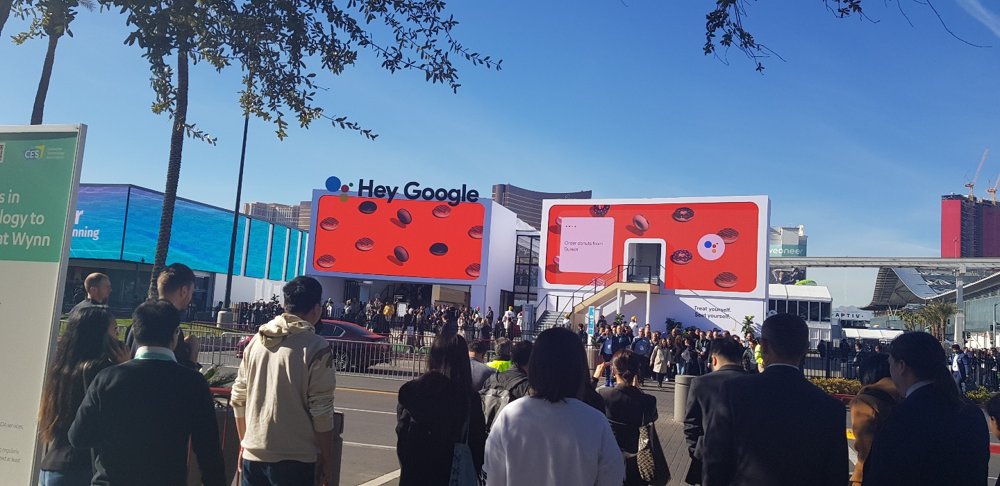
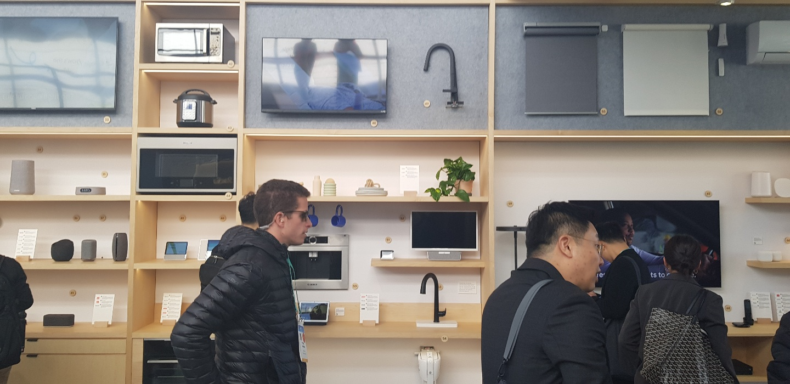
특히 3시간의 기다림 끝에 보게된 구글의 메인 전시인 change of plans은 큰 충격이었다.
6명의 관람객이 한 팀이 되어 구글 어시스턴트를 놀이기구 타듯 경험할 수 있는 프로그램으로 각 관람객들은
1번부터 6번까지 번호를 부여받고 자신의 숫자가 방에 표시 될 때 그 문구를 직접 명령하도록 구성되었다.
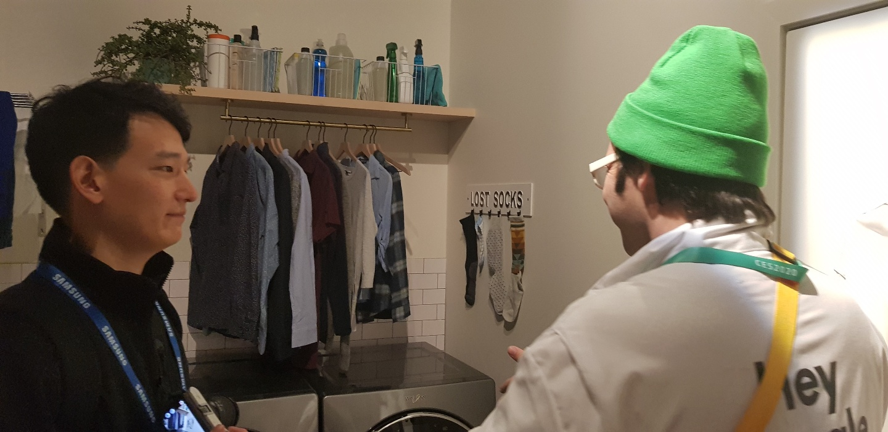
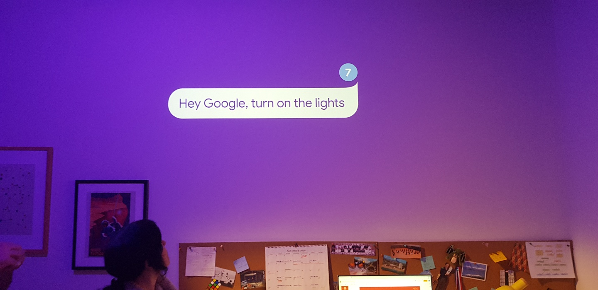
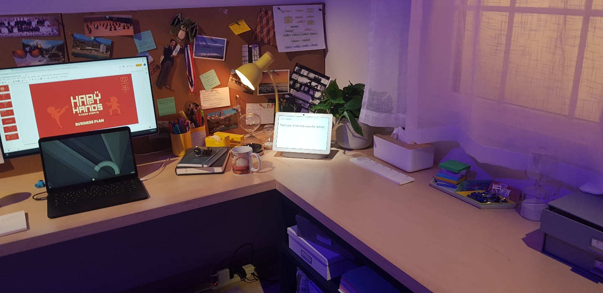
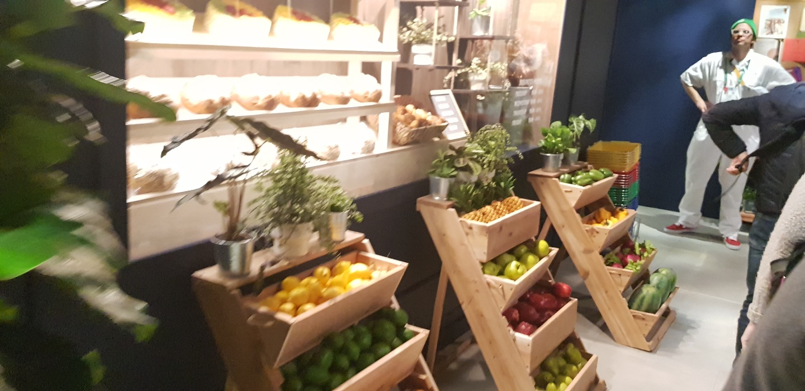
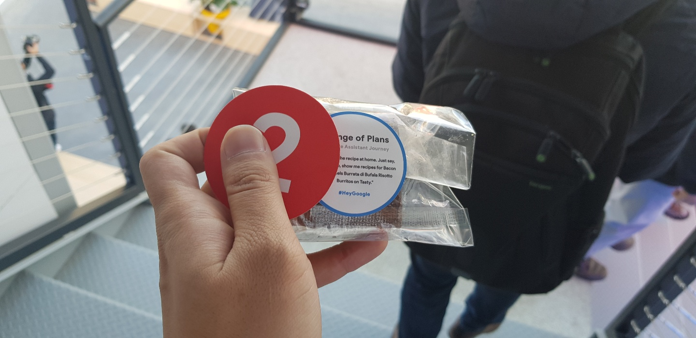
프로그램에 참여한 사람들은 자연스럽게 구글 어시스턴트로 할 수 있는 가장 간단한 명령부터 복잡한 명령까지
직접 수행하였고 이 프로그램을 경험한 사용자는 앞으로 구글 어시스턴트를 사용할 때 전혀 어려움이 없을 것 같다는 생각이 들었다.
다른 존과 달리 별도 건물을 사용하다보니 다소 소규모로 진행되었고, 체험까지 수시간을 기다리는 아쉬움이 있었지만
이 프로그램을 마친후에는 기다린 보람이 있다는 말이 나올 정도로 몰입감 있고, 놀라운 경험이였으며 구글이 제시한 비전과 가능성을 가장 짧은 시간안에 가장 명확하게 체험할 수 있었던 것 같았다.
1일차를 마치며...
처음 CES를 체험하며 굉장히 많은 기업들이 참가를 했지만, 삼성, LG, Google등의 기업들에 사람들이 굉장히 많이 몰리는 것을 확인할 수 있었다.
세계으로 주목받는 회사에서 일 한다는 부분에 대해서 다시한번 자부심을 느끼는 자리가 되었다.
한편으로는 주목받는 기업들이 보여주는 비전의 방향이 조금식 달랐다. 삼성은 IoT로봇 볼리로 새로운 경험의 시대를,
LG는 기존 가전의 혁신과 새로운 제품군들을, Google은 이미 다 알려져 있지만 체험을 중심으로 비전을 보여주는 형태여서
앞으로의 우리가 나아갈 방향을 참고해서 고민해 보아야 할 것 같다.